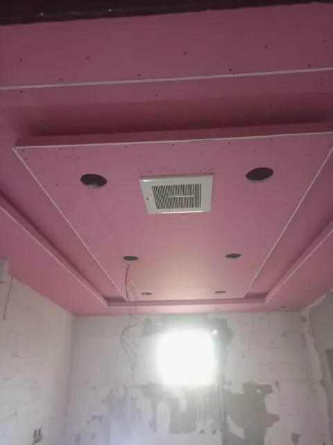
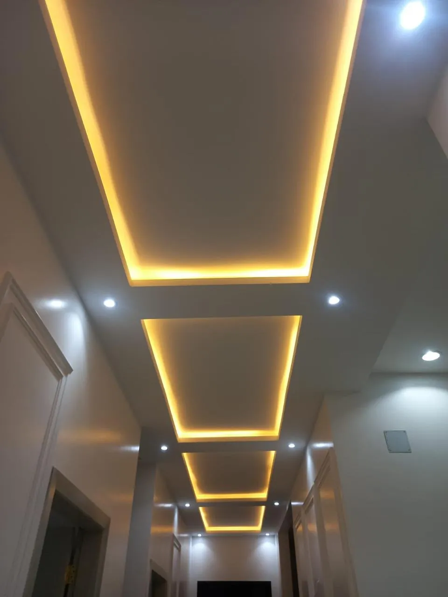
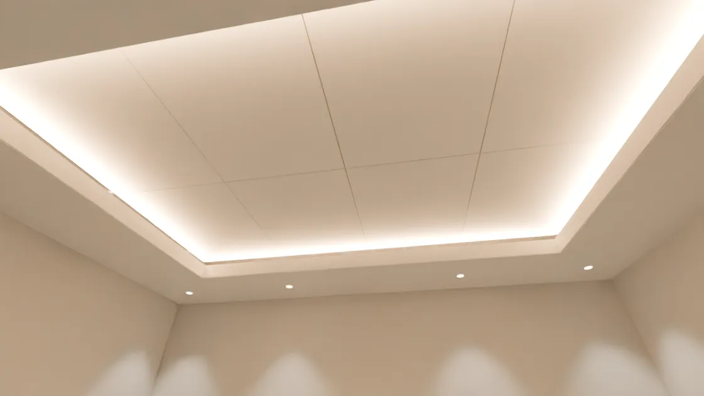

ديكورات الجبس وجبسم بورد
معلم نزير خان وفريقه: أسقف معلقة، قواطع، وجدران تلفزيون، من الهيكل الحديدي حتى آخر خط إضاءة.
تواصل معنا على واتساب

كيف يُبنى السقف المعلّق
- الهيكل الحديدي. أسياخ تعليق من السقف الأصلي، ثم قنوات حديد مجلفن في الاتجاهين.
- ألواح الجبسم بورد. ألواح وردية مقاومة للحريق تُثبّت على الهيكل، مع إطار منخفض حول الأطراف.
- المعجون والدهان. تُخفى الفواصل ويصير السقف كله سطحاً واحداً أبيض.
- الإضاءة. شريط إضاءة مخفي فوق الإطار، وسبوتات مدفونة في أطرافه.
رسم توضيحي ثلاثي الأبعاد لمراحل التنفيذ.

من مواقع العمل
قبل الألواحنتعلّق بالهيكل الحديدي قبل إغلاقه، فما يحملنا يحمل السقف.
ثم التركيبألواح وردية مقاومة للحريق تُثبّت على الهيكل فوق السلالم.
سقف بمستوياتفتحات الإنارة والتكييف تُقصّ في مكانها قبل المعجون.
قواطع في مستودعجدران جبس بورد تقسم المساحة الكبيرة إلى غرف ومكاتب.
إطارات الجداربراويز جبس متدرجة لجدار التلفزيون، قبل المعجون.
في المكتبعمود مكسو بالمضلّع وسط واجهات زجاجية.
قبل نزع الغلافبانوهات جدارية بغلافها الواقي، وسقف بإنارة مدفونة.
جدار مضلّعتكسية مضلّعة بلون البلوط وإطار للتلفزيون.
عند التسليموحدة معلقة بإضاءة سفلية بين بانوهين بلون الجوز.
بعد الدهانسقف بمستويين وإضاءة مخفية، وجدار ببانوهات داكنة.
وأخيراً الضوءممر بأسقف معلقة وإضاءة مخفية دافئة.
بعد التشطيب والإضاءة
ثلاثة أعمال للفريق: ممر، وجدار تلفزيون، وسقف بمستويين.
ما نعمله في كل مشروع
من السقف إلى الجدار
الخدمات
| الخدمة | ما يشمله | أين |
|---|---|---|
| أسقف جبس معلقة | مستويات وإضاءة مخفية | صالات وممرات |
| قواطع جبس بورد | غرف ومكاتب داخل المساحة | مكاتب ومستودعات |
| مكتبات وجدران تلفزيون | فتحات ورفوف ووحدات معلقة | مجالس وصالات |
| ديكورات جبس مميزة | إطارات وبراويز متدرجة | صالات استقبال |
| تكسيات جدران | بانوهات خشبية ومضلّعة | مجالس ومكاتب |
| تشطيبات عالية الجودة | معجون ودهان وزوايا مستقيمة | كل الأعمال |
معلم نزير خان وفريقه
فريق يعمل بيده في كل مرحلة: يعلّق الهيكل، ويركّب الألواح، ويشطّب، ثم يشعل الإضاءة. في البيت أو المكتب أو المستودع، القاعدة واحدة: هيكل يحمل، وتشطيب لا يحتاج إعادة.
جودة العمل سر نجاحنا. نزور المكان ونقيس، ونتفق معك على التصميم والسعر قبل أول لوح.
- السعر
- مناسب، ومتفق عليه قبل البدء
- العمل
- دقيق، بزوايا مستقيمة
- المواعيد
- التزام بالموعد المتفق عليه
- الجوال
- 055 758 2241
تواصل
نزور المكان، ونقيس، ونعطيك السعر قبل أن نبدأ. اختر الطريقة التي تناسبك.
متى نزورك؟
تواصل معنا على واتساب أو اتصل: 055 758 2241مكالمة أو رسالة على الرقم نفسه. موقعنا: حي الروضة، الرياض
موقعنا في الرياض
حي الروضة، الرياض
نعمل من حي الروضة، ونزور موقعك للمعاينة قبل أن نبدأ.
افتح الموقع في خرائط Google